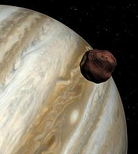

Amalteia
Amalteia (FO 1943: Amaltéia) (em grego: Ἀμάλθεια), na mitologia grega, foi a ninfa que possuía a cabra Aix que cedeu leite a Zeus recém-nascido. Em uma variante do mito, a cabra era quem se chamava Amalteia. Em outra variante, Amalteia era uma deusa teriomórfica, possuindo chifres. Ao se tornar rei dos deuses, Zeus, em sinal de agradecimento, concedeu um poder especial aos chifres de Amalteia: aquele que os possuísse poderia obter tudo o que desejasse - daí a lenda do corno da abundância ou cornu copĭae, cornucópia, também chamado Corno de Amalteia.
Amalteia é uma lua do planeta Júpiter com cerca de 167 km de diâmetro e orbitando a uma distância média de 181 000 km do centro de Júpiter. Tem uma forma irregular e não possui qualquer tipo de atmosfera permanente. Foi observado mais em pormenor pelas sondas Voyager e mais recentemente pela sonda orbital Galileu.